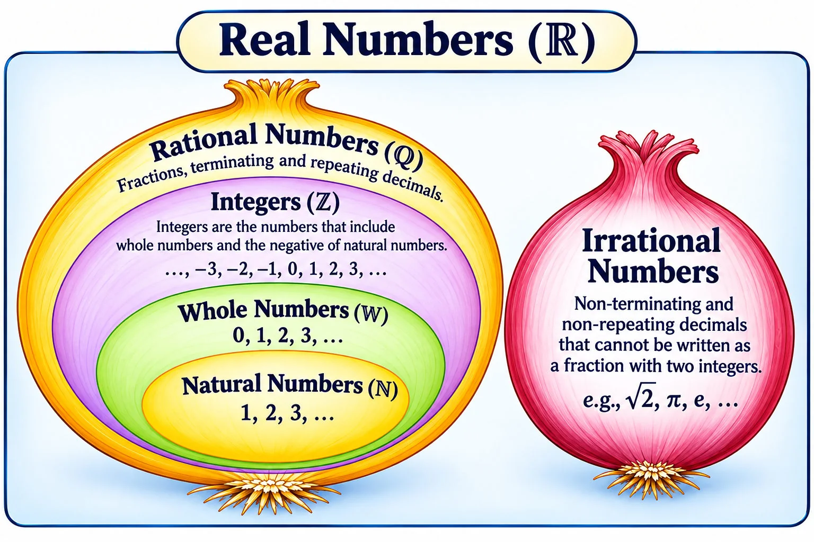
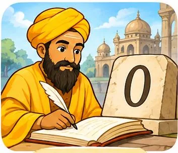
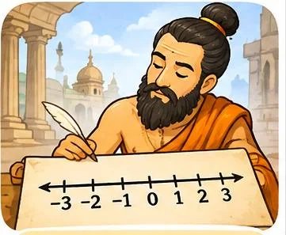
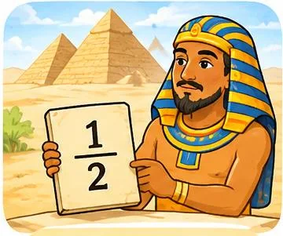
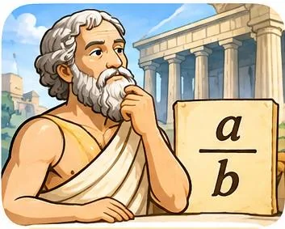
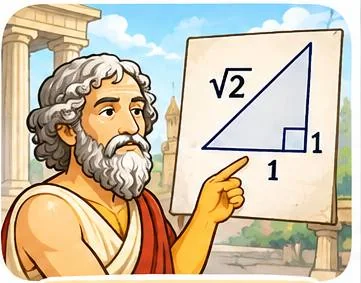
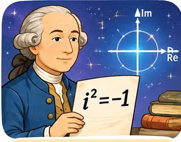
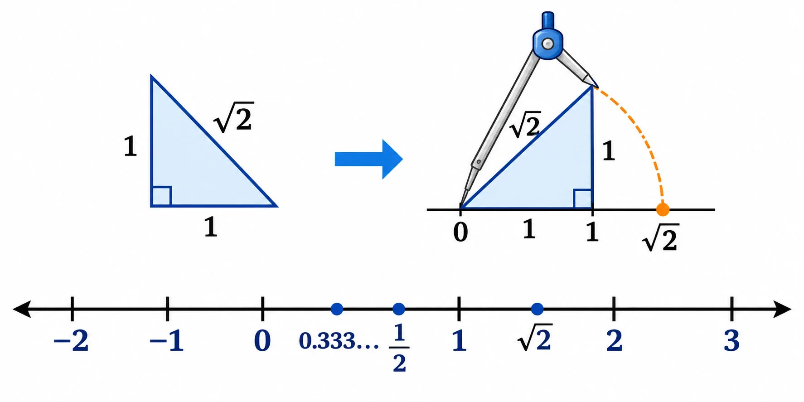
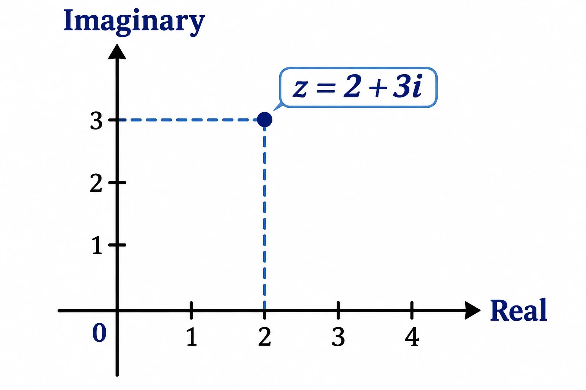

Number Families
The diagram shows how number families are related. Natural numbers are contained in whole numbers, integers, and rational numbers. Rational and irrational numbers together form the real numbers.

Meet Each Number Family
1. Natural Numbers
These are the counting numbers we use every day: 1, 2, 3, 4, 5, … They start at 1 and go on forever.
Examples: 1, 2, 3, 4, 5, …
History of Natural Numbers
Long, long ago — before calculators, pencils, or even paper — people counted with their fingers, pebbles, and sticks. They used numbers only for things they could see and count: “How many sheep?” “How many baskets of apples?” These early counting numbers — 1, 2, 3, 4, 5, … — became what we now call the natural numbers. So natural numbers are called natural because they were the first, most natural way humans learned to count things they could hold and see.
2. Whole Numbers
These include 0 and all the natural numbers. 0, 1, 2, 3, 4, …
Examples: 0, 1, 2, 3, 4, …

History of Whole Numbers
At first, zero wasn’t even part of the number story! Ancient civilizations like the Egyptians and Greeks didn’t have a symbol for nothing. It was the Indians, around 500 AD, who first used a small dot to show zero, and later the idea spread through the Arab world to the rest of the world.
3. Integers
Integers are the numbers that include whole numbers and the negatives of natural numbers: …, −3, −2, −1, 0, 1, 2, 3, …
Examples: …, −3, −2, −1, 0, 1, 2, 3, …

History of Integers
The idea of numbers below zero was once strange to mathematicians.
- The word integer comes from Latin integer, meaning whole or “untouched.”
- Around the 7th century CE, the Indian mathematician Brahmagupta described positives as “fortunes” and negatives as “debts.”
- In Europe, negative numbers were long rejected as “absurd” or “false roots.”
- By the 19th century, negatives, zero, and positives were joined into one set called integers, written as ℤ (from German Zahlen, meaning numbers).
The integers we use today took centuries to develop — from counting goods to understanding the full number line …, –2, –1, 0, 1, 2, …
4. Fractions
Fractions show parts of a whole.
Examples: 1/2, 9/8, 3/8, 1 3/4

History of Fractions
Fractions have a long and interesting story!
- Around 4,000 years ago, the ancient Egyptians used fractions to measure land and divide food. They wrote most fractions as unit fractions — parts with 1 on top, like ½ or ⅕.
- The Babylonians and Greeks later used fractions for astronomy and trade, creating their own systems.
- In the Middle Ages, merchants in the Arab world improved fraction notation and spread it to Europe. This is where the fraction bar (the line between numbers) became common.
- By the Renaissance, fractions were taught in schools as part of arithmetic, written just as we do today — numerator over denominator.
So, the fractions we use now were built over thousands of years — from ancient farmers sharing bread to scientists measuring stars!
5. Decimals
Another way to show parts of a whole.
Examples: 0.5 = 1/2; 0.25 = 1/4
History of Decimals
Decimals came from the need to write fractions more easily.
- About 2,000 years ago, the ancient Chinese and Greeks used base-10 ideas for measuring and trading, but they didn’t yet use decimal points.
- Around the 9th century, Arabic mathematicians began using a small mark to separate whole numbers from fractional parts — an early form of the decimal point.
- In the 1500s, the Flemish mathematician Simon Stevin published a book called De Thiende (“The Tenth”), showing how decimals could replace fractions in daily math. His idea spread quickly because it made money and measurement much simpler.
- Later, scientists like Newton and Leibniz used decimals for precise calculations in science and engineering.
Today, decimals are everywhere — in prices, measurements, and computers — carrying the same base-10 system that started thousands of years ago!
6. Rational Numbers
Numbers that can be written as a fraction of two integers. They include whole numbers, fractions, and decimals that end or repeat.
Examples: 1/2, 3/4, 0.5, 0.333…

History of Rational Numbers
The idea of numbers as ratios — one number divided by another — goes back thousands of years.
- The Egyptians used special fraction notation to divide things like bread and land, showing early rational numbers.
- Ancient Greek and Indian mathematicians studied ratios and fractions deeply, giving shape to what we now call rational numbers.
- In medieval times, the use of rational numbers spread even more, helped by the Hindu–Arabic numeral system and trade across continents.
- By the 17th and 18th centuries, mathematicians realized that rational numbers (fractions and repeating decimals) are just one part of the full number system — other numbers, like irrational numbers, went beyond them.
So, when you use a rational number like ¾, you are working with a concept that people have developed and refined over many centuries!
7. Irrational Numbers
Numbers that can’t be written as a simple fraction — their decimals go on forever without repeating.
Examples: π = 3.14159…; √2 = 1.41421…

History of Irrational Numbers
The idea of numbers that can’t be written as a simple fraction surprised the world.
- Around 500 BC, members of the Pythagorean school in ancient Greece discovered that the length of the diagonal of a square (√2) couldn’t be expressed as a ratio of whole numbers.
- Later mathematicians in India and the Arab world studied these “incommensurable” magnitudes, giving shape to the idea of irrational numbers.
- In the 18th and 19th centuries, mathematicians proved that numbers like π and e are irrational — they go on forever and never repeat as a fraction.
So, when you use a number like √2 or 3.14159…, you’re working with a concept that challenged ancient ideas and took centuries to understand!
8. Imaginary Numbers
Imaginary numbers come from taking the square root of a negative number — something we can’t do with regular numbers! The basic imaginary unit is i, where i² = −1.
Example: √−1 = i

History of Imaginary Numbers
Imaginary numbers were not invented because people were bored — they were invented because equations wouldn’t behave.
- In the 1500s (16th century), Italian mathematicians were trying to solve hard equations, like cubic and quartic equations, and expressions like √−1 started to appear. At that time, everyone knew: the square of a real number can’t be negative — so this looked like a “made-up number.”
- To keep the calculations going, they decided to allow this kind of number and give it a symbol. Later, mathematicians used i to stand for √−1, and they defined it as: i² = −1.
- In the 18th and 19th centuries, mathematicians like Euler and Gauss put real numbers and imaginary numbers together to form complex numbers, and they discovered that this actually made algebra and geometry more powerful.
- Later, scientists and engineers found that imaginary numbers were not “fake” at all — they were perfect for describing rotation, waves, and electricity.
So even though they are called imaginary, they are actually very useful numbers — we just can’t place them on the ordinary number line!
Number Basics
Number 0
- 0 is neither positive nor negative.
- 0 is not a natural number.
- 0 is a whole number, an integer, and a rational number.
- 0 is an even number.
- Even numbers are numbers that are divisible by 2.
- If you can divide a number by 2 with no remainder, it’s even.
- 0 ÷ 2 = 0 with no remainder → so 0 is even.
- You can’t divide by 0. a ÷ 0 is not defined.
- 0 can’t be used as the denominator of a fraction.
- 0.0 is a decimal number, even though its value is 0.
Number 1
- 1 to any power is still 1, e.g. 1² = 1, 1⁵ = 1, 1¹⁰⁰ = 1.
- 1 is neither prime nor composite.
- A prime number has exactly two factors: 1 and itself. Example: 2 → factors are 1 and 2.
- A composite number has more than two factors. Example: 6 → factors are 1, 2, 3, 6.
But 1 has only one factor — just 1. So, it doesn’t fit in the prime group or the composite group. We leave 1 by itself so that the rules of math stay nice and tidy.
Representing Numbers on a Number Line and a Coordinate Plane
Real Numbers on a Number Line
Every real number, whether rational or irrational, can be represented by exactly one point on a number line.
Rational numbers can be written as fractions of two integers (with a nonzero denominator). Terminating and repeating decimals are rational: 0.5 = 1/2 and 0.333… = 1/3. Fractions identify exact positions on the number line.
Irrational numbers cannot be written as a ratio of two integers. Their decimal expansions never terminate or repeat, but their positions on the number line are still exact.
Example — Constructing √2 exactly: Draw a right triangle with perpendicular sides of length 1. By the Pythagorean theorem, its hypotenuse is √(1² + 1²) = √2. Use a compass centered at zero to transfer this hypotenuse length to the positive number line. The intersection is exactly √2, not merely an approximation.

Complex Numbers on a Coordinate Plane
A complex number z = a + bi (where i² = −1) corresponds to the point (a, b) on the complex plane. The horizontal axis represents the real part a; the vertical axis represents the imaginary coefficient b. For example, 2 + 3i corresponds to (2, 3).

Key idea: Real numbers occupy a one-dimensional number line; complex numbers can be represented on a two-dimensional plane. This makes geometric operations such as distances and rotations accessible through algebra.